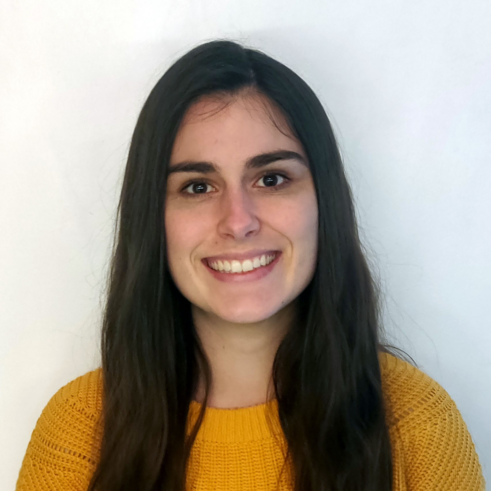

Charlotte GARRAUDALTERNANCE M2 BIOINFORMATIQUEDIPLOMES ET FORMATIONSMaster 1 : Bioinformatique - Biostatistique - 2ème / 36 - Mention Bien Séjour linguistique anglais Master 1 : Sciences du médicament et des Produits de santé - Mention Bien DFASP3 : 6ème année de Pharmacie Industrie / Recherche STAGES ET EXPERIENCES PROFESSIONNELLESStage en bioinformatique : développement logiciel web Stage de recherche Stages hospitaliers Emploi étudiant en pharmacie PROJETS SCOLAIRES ET PERSONNELSApplication de recherche de parkings dans les données publiques de Nantes Métropole (Bash, Python, HTTP/REST Api) Construction d'un arbre de préfixes compressé étiqueté à partir d’une liste de séquences d’ADN (C++) Site internet de vente de paniers locaux pour un retrait dans les marchés (PHP / SQL) EXPERIENCES ASSOCIATIVESAssociation Nantaise des Etudiants en Pharmacie
- Nantes / Mars 2018 à Août 2021 Tutrice PACES - Tutorat Santé - Nantes Université / Septembre 2017 à Août 2018 |

INFORMATIQUE
LABORATOIRE
LANGUE
INTERETS
|